栅极电离室：信号形成与模拟¶
α 粒子在气体中留下电离径迹，电子向阳极漂移时，在阴极和阳极上产生不同的感应信号。下面沿用原实验装置，从能量损失计算电流、电荷与前放输出，再解释两路信号的角度依赖。
建议在学完第一章和探测器信号形成后阅读。代码从本目录运行；运行说明与数据文件。
1. 装置与电离径迹¶
实验采用背靠背 Frisch-grid ionization chamber（GIC），中央复合 α 源向两侧发射粒子；这里只讨论其中一侧。装置照片、原始波形及相关资料由张国辉课题组刘杰、崔增祺提供，实验与模型参见文献 [1]。
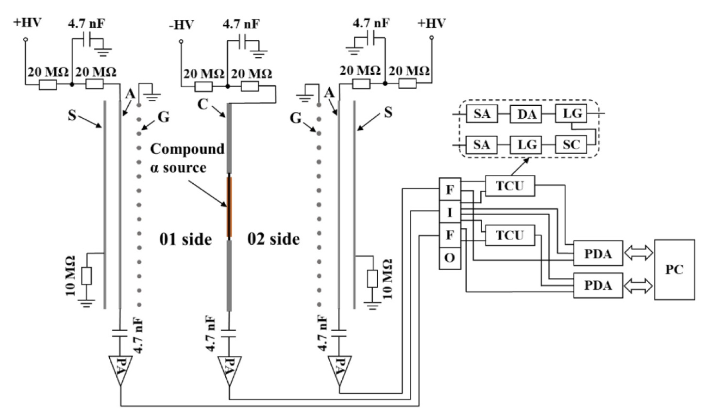
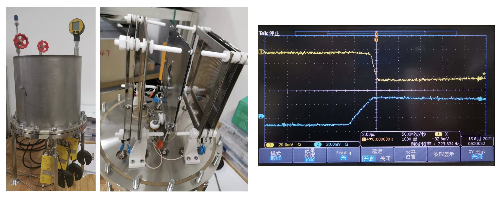
| 参数 | 数值 |
|---|---|
| 阴极—栅极距离 $D$ | 60.35 mm |
| 栅极—阳极距离 $d$ | 15.24 mm |
| 方形电极边长 | 156 mm |
| 栅丝半径 / 间距 | 0.05 mm / 2.0 mm |
| 气体 | 0.922 bar，Ar + 3.45% CO₂ |
| 阴极 / 栅极 / 阳极电位 | −1500 V / 0 V / +750 V |
| MPR-1 前放衰减时间常数 $\tau$ | 27 μs |
源含 ²³⁴U、²³⁹Pu、²³⁸Pu、²⁴⁴Cm，所用 α 能量分别为 4.775、5.155、5.499、5.805 MeV；原实验源总活度约 16 Bq，各组分约占 30%、14%、42%、14%。这里先取 5.805 MeV 的一条径迹。
电子在两个区域的漂移速度取 $v_{\rm cg}=40$ mm/μs、$v_{\rm ga}=34$ mm/μs。这是给定气体条件下的模型输入，不是由电压比直接推出的速度比；真实漂移速度还取决于气体成分、压强和约化电场。
从阻止本领得到能量沉积¶
阻止本领 $S(E)=-\mathrm dE/\mathrm ds$ 描述沿径迹单位长度的平均能损。把粒子能量逐步减去 $\Delta E$，每一段长度为
$$\Delta s\simeq\frac{\Delta E}{S(E-\Delta E/2)}.$$
原 SRIM 文件的阻止本领单位是 MeV/(mg/cm²)。下方三列文件已按原表中的换算因子整理为 能量 MeV、阻止本领 MeV/mm、projected range mm，没有改变表内数值的物理含义。
import ROOT
import numpy as np
ROOT.gStyle.SetOptStat(0)
ROOT.gStyle.SetPadLeftMargin(.16)
ROOT.gStyle.SetPadBottomMargin(.14)
ROOT.gStyle.SetNdivisions(505,"XY")
gS = ROOT.TGraph("srim_stopping.txt", "%lg %lg %*lg")
gR = ROOT.TGraph("srim_stopping.txt", "%lg %*lg %lg")
c = ROOT.TCanvas("c", "SRIM", 850, 380)
c.Divide(2, 1)
c.cd(1)
gS.SetTitle("Stopping power;Energy (MeV);S (MeV/mm)")
gS.Draw("AL")
gS.GetXaxis().SetRangeUser(0, 6)
c.cd(2)
gR.SetTitle("Projected range;Energy (MeV);Range (mm)")
gR.Draw("AL")
gR.GetXaxis().SetRangeUser(0, 6)
gR.SetMaximum(60)
c.Draw()gStyle->SetOptStat(0);
gStyle->SetPadLeftMargin(.16);
gStyle->SetPadBottomMargin(.14);
gStyle->SetNdivisions(505,"XY");
auto gS = new TGraph("srim_stopping.txt", "%lg %lg %*lg");
auto gR = new TGraph("srim_stopping.txt", "%lg %*lg %lg");
auto c = new TCanvas("c", "SRIM", 850, 380);
c->Divide(2, 1);
c->cd(1);
gS->SetTitle("Stopping power;Energy (MeV);S (MeV/mm)");
gS->Draw("AL");
gS->GetXaxis()->SetRangeUser(0, 6);
c->cd(2);
gR->SetTitle("Projected range;Energy (MeV);Range (mm)");
gR->Draw("AL");
gR->GetXaxis()->SetRangeUser(0, 6);
gR->SetMaximum(60);
c->Draw();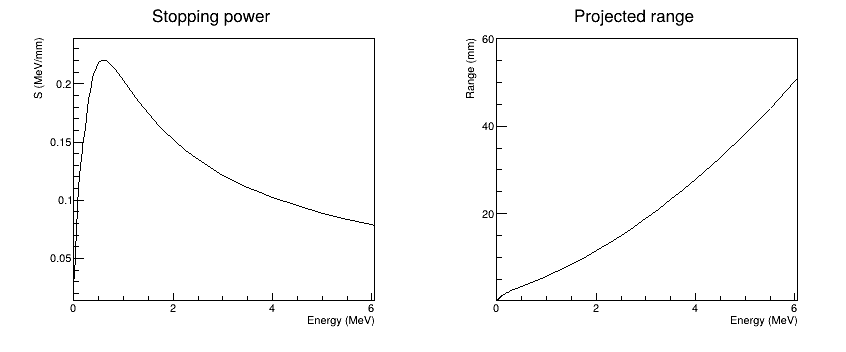
这里用阻止本领积分建立径迹上的能损分布，并把总长度缩放到 SRIM 的 projected range，作为平均直线径迹的近似。阻止本领积分给出路径长度估计，projected range 则包含散射对投影长度的影响。下例不抽样射程涨落；末端低于表格下限 10 keV 的部分暂用最低能量处的阻止本领。
E0, step = 5.805, 0.002 # MeV
energy, distance = E0, 0.0
s, de, lengths = [], [], []
while energy > 1e-10:
loss = min(step, energy)
stopping = gS.Eval(max(0.010, energy - loss / 2))
ds = loss / stopping
s.append(distance + ds / 2) # 每段的中点
de.append(loss)
lengths.append(ds)
distance += ds
energy -= loss
s, de = np.array(s), np.array(de)
scale = gR.Eval(E0) / distance
s *= scale
bragg = ROOT.TGraph(len(s), s, de / (np.array(lengths)*scale))
print(f"E = {sum(de):.3f} MeV; projected range = {gR.Eval(E0):.2f} mm")
c.Clear()
bragg.SetTitle("Mean alpha track;Distance along track (mm);dE/ds (MeV/mm)")
bragg.Draw("AL")
c.Draw()double E0 = 5.805, step = 0.002;
double energy = E0, distance = 0;
std::vector<double> s, de, ds;
while (energy > 1e-10) {
double loss = std::min(step, energy);
double length = loss / gS->Eval(std::max(0.010, energy-loss/2));
s.push_back(distance + length/2);
de.push_back(loss);
ds.push_back(length);
distance += length;
energy -= loss;
}
double scale = gR->Eval(E0) / distance;
auto bragg = new TGraph();
for (int j=0; j<(int)s.size(); ++j) {
s[j] *= scale;
bragg->SetPoint(j, s[j], de[j]/(ds[j]*scale));
}
std::cout << std::fixed << std::setprecision(3)
<< "E = " << std::accumulate(de.begin(),de.end(),0.0)
<< " MeV; projected range = " << gR->Eval(E0) << " mm\n";
c->Clear();
bragg->SetTitle("Mean alpha track;Distance along track (mm);dE/ds (MeV/mm)");
bragg->Draw("AL");
c->Draw();E = 5.805 MeV; projected range = 47.88 mm
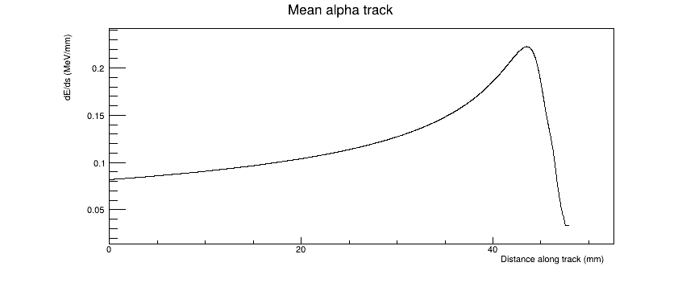
粒子减速时单位长度能损增大，形成 Bragg peak；更低能区中阻止本领又下降。产生的电子—离子对数约为 $N_e=\Delta E/W$，$W$ 是产生一个可收集电子—离子对所需的平均能量，不是原子的电离能。
2. 从漂移到感应电流¶
栅极的作用¶
普通平行板电离室在电子收集的时间尺度内，信号会依赖电离发生的位置。Frisch 栅极把漂移区与阳极收集区隔开：理想情况下，电子过栅前几乎不产生阳极信号，过栅后才在阳极—栅极间形成感应电流。因此阳极主要给出能量信息，阴极还保留径迹的位置信息。
Shockley–Ramo 定理写为
$$i_k=q\,\mathbf v\cdot\mathbf E_{w,k},\qquad \mathbf E_{w,k}=-\nabla\phi_{w,k}.$$
权重势 $\phi_{w,k}$ 来自一个辅助静电问题：读出电极置于单位电势，其他电极接地，并移走漂移电荷。工作电场决定电子怎样运动，权重场决定这段运动在电极上感应多少信号。 两者不能混用。
理想栅极下，阴极权重势在漂移区为 $1-z/D$，阳极权重势在该区近似为零；收集区的阳极权重势为 $(z-D)/d$。下面用正值表示两路电子感应电流的大小，输出电压的正负由前放极性另外给出。慢正离子信号不在这个快速电子读出的模型中。
电子到栅与到阳极的时刻¶
设源在阴极 $z=0$，径迹与漂移方向夹角为 $\theta$。第 $j$ 段位于 $z_j=s_j\cos\theta$，则
$$t_{g,j}=\frac{D-s_j\cos\theta}{v_{\rm cg}},\qquad t_{a,j}=t_{g,j}+\frac{d}{v_{\rm ga}}.$$
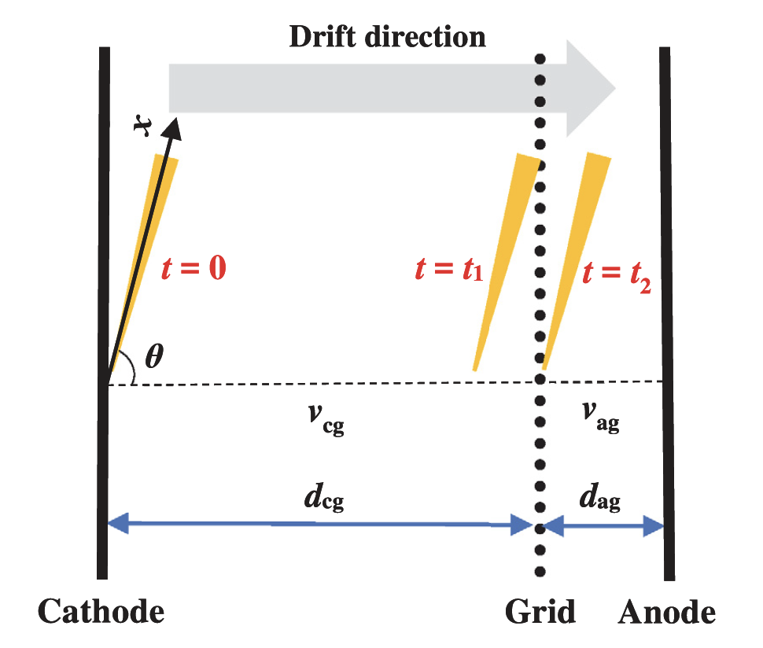
一小段电荷在漂移区贡献一个近似矩形的阴极电流，过栅后贡献一个阳极电流：
$$i_{c,j}=\frac{e}{W}\Delta E_j\frac{v_{\rm cg}}{D} \quad(0<t<t_{g,j}),$$ $$i_{a,j}=\frac{e}{W}\Delta E_j\frac{v_{\rm ga}}{d} \quad(t_{g,j}<t<t_{a,j}).$$
把各段相加即可。为直接对应能量，这里省略共同因子 $e/W$，使用 MeV/μs 的能量等效电流，积分后为 MeV-equivalent，不是安培和库仑。若取 $W=26$ eV，1 MeV-equivalent 对应约 6.16 fC。
D, d, vc, va = 60.35, 15.24, 40.0, 34.0
theta = 0.0 # degree；改为 45 或 90 可比较径迹方向
dt, n = 0.01, 5000 # μs，10 ns/sample
t = (np.arange(n) + 0.5) * dt
ic, ia = np.zeros(n), np.zeros(n)
for position, loss in zip(s, de):
tg = (D-position*np.cos(np.deg2rad(theta))) / vc
ta = tg + d/va
for k in range(int(np.ceil(tg/dt))):
overlap = max(0, min((k+1)*dt, tg)-k*dt)
ic[k] += loss*vc/D * overlap/dt
for k in range(int(tg/dt), int(np.ceil(ta/dt))):
overlap = max(0, min((k+1)*dt, ta)-max(k*dt, tg))
ia[k] += loss*va/d * overlap/dt
gic = ROOT.TGraph(n, t, ic)
gia = ROOT.TGraph(n, t, ia)
c.Clear()
gic.SetTitle("Induced electron currents;Time (#mus);MeV/#mus")
gic.SetLineColor(ROOT.kBlue+1)
gia.SetLineColor(ROOT.kRed+1)
gic.Draw("AL")
gic.GetXaxis().SetRangeUser(0, 2.3)
gic.SetMaximum(1.15*max(max(ic), max(ia)))
gia.Draw("L SAME")
legend = ROOT.TLegend(.65,.7,.89,.88)
legend.AddEntry(gic,"Cathode","l")
legend.AddEntry(gia,"Anode","l")
legend.Draw()
c.Draw()double D=60.35, d=15.24, vc=40.0, va=34.0;
double theta=0.0; // degree；改为 45 或 90 可比较径迹方向
const int n=5000;
double dt=0.01, t[n], ic[n]={0}, ia[n]={0};
for (int k=0; k<n; ++k) t[k]=(k+0.5)*dt;
for (int j=0; j<(int)s.size(); ++j) {
double tg=(D-s[j]*std::cos(theta*TMath::DegToRad()))/vc;
double ta=tg+d/va;
for (int k=0; k<(int)std::ceil(tg/dt); ++k) {
double overlap=std::max(0.0,std::min((k+1)*dt,tg)-k*dt);
ic[k] += de[j]*vc/D*overlap/dt;
}
for (int k=int(tg/dt); k<(int)std::ceil(ta/dt); ++k) {
double overlap=std::max(0.0,std::min((k+1)*dt,ta)-std::max(k*dt,tg));
ia[k] += de[j]*va/d*overlap/dt;
}
}
auto gic=new TGraph(n,t,ic);
auto gia=new TGraph(n,t,ia);
c->Clear();
gic->SetTitle("Induced electron currents;Time (#mus);MeV/#mus");
gic->SetLineColor(kBlue+1); gia->SetLineColor(kRed+1);
gic->Draw("AL"); gic->GetXaxis()->SetRangeUser(0,2.3);
gic->SetMaximum(1.15*std::max(*std::max_element(ic,ic+n),*std::max_element(ia,ia+n)));
gia->Draw("L SAME");
auto legend=new TLegend(.65,.7,.89,.88);
legend->AddEntry(gic,"Cathode","l"); legend->AddEntry(gia,"Anode","l");
legend->Draw(); c->Draw();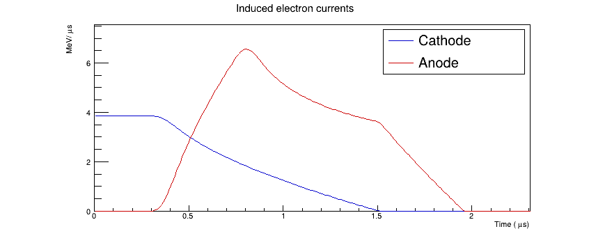
overlap 是一段电流与当前采样时间段重叠的长度。这样处理边界，电子到栅时刻就不必恰好落在采样点上；这里每段平均电流对应 10 ns。
3. 积分电荷与前放输出¶
积分电流得到感应电荷。理想情况下，每一段电子都走过完整的栅极—阳极距离，因此
$$Q_a=\sum_j\Delta E_j=E_0,\qquad Q_c=\sum_j\Delta E_j\left(1-\frac{s_j\cos\theta}{D}\right).$$
qc, qa = np.cumsum(ic)*dt, np.cumsum(ia)*dt
te = (np.arange(n)+1)*dt # 累计电荷对应每段时间的末端
gqc = ROOT.TGraph(n, te, qc)
gqa = ROOT.TGraph(n, te, qa)
c.Clear()
gqc.SetTitle("Integrated charge;Time (#mus);Charge (MeV-equivalent)")
gqc.SetLineColor(ROOT.kBlue+1)
gqa.SetLineColor(ROOT.kRed+1)
gqc.Draw("AL")
gqc.GetXaxis().SetRangeUser(0, 2.3)
gqc.SetMaximum(E0*1.1)
gqa.Draw("L SAME")
legend.Draw()
c.Draw()
print(f"Qa = {qa[-1]:.6f}; Qc = {qc[-1]:.6f} MeV-equivalent")
assert abs(qa[-1]-E0) < 1e-8double qc[n]={0}, qa[n]={0}, te[n];
double sumc=0, suma=0;
for (int k=0; k<n; ++k) {
sumc += ic[k]*dt; suma += ia[k]*dt;
qc[k]=sumc; qa[k]=suma; te[k]=(k+1)*dt;
}
auto gqc=new TGraph(n,te,qc); auto gqa=new TGraph(n,te,qa);
c->Clear();
gqc->SetTitle("Integrated charge;Time (#mus);Charge (MeV-equivalent)");
gqc->SetLineColor(kBlue+1); gqa->SetLineColor(kRed+1);
gqc->Draw("AL"); gqc->GetXaxis()->SetRangeUser(0,2.3);
gqc->SetMaximum(E0*1.1); gqa->Draw("L SAME"); legend->Draw(); c->Draw();
std::cout << std::setprecision(6) << "Qa = " << qa[n-1]
<< "; Qc = " << qc[n-1] << " MeV-equivalent\n";
if (std::abs(qa[n-1]-E0)>1e-8) throw std::runtime_error("Charge integral failed");Qa = 5.805000; Qc = 3.181062 MeV-equivalent
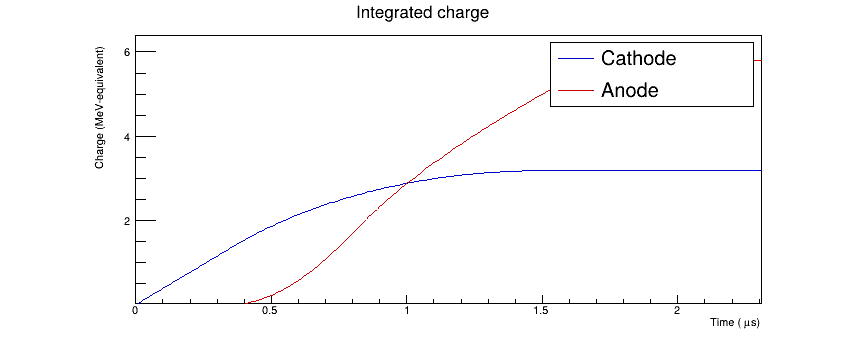
电荷灵敏前放的反馈电容 $C_f$ 与电阻 $R_f$ 给出 $\tau=R_fC_f$，输出为
$$V(t)=-\frac{1}{C_f}\int_0^t i(t')e^{-(t-t')/\tau}\,\mathrm dt'.$$
在能量等效单位下，把电荷转换和放大系数写成 $G$。对一小段近似恒定的输入电流，可用递推式代替重复计算卷积：
$$u_k=e^{-\Delta t/\tau}u_{k-1} +\tau\bigl(1-e^{-\Delta t/\tau}\bigr)i_k,\qquad V_k=G u_k.$$
tau = 27.0
a = np.exp(-dt/tau)
uc, ua = np.zeros(n), np.zeros(n)
state_c, state_a = 0.0, 0.0
for k in range(n):
state_c = a*state_c + tau*(1-a)*ic[k]
state_a = a*state_a + tau*(1-a)*ia[k]
uc[k], ua[k] = state_c, state_a
guc = ROOT.TGraph(n, te, 100*uc) # 教学增益，mV/MeV-equivalent
gua = ROOT.TGraph(n, te, -100*ua) # 实验阳极输出为负脉冲
c.Clear()
guc.SetTitle("Charge-sensitive preamplifier;Time (#mus);Voltage (mV)")
guc.SetLineColor(ROOT.kBlue+1)
gua.SetLineColor(ROOT.kRed+1)
guc.Draw("AL")
guc.SetMinimum(-650)
guc.SetMaximum(650)
gua.Draw("L SAME")
legend.Draw()
c.Draw()
print(f"Anode peak / Qa = {max(ua)/qa[-1]:.4f}")double tau=27.0, a=std::exp(-dt/tau);
double uc[n], ua[n], vcOut[n], vaOut[n], state_c=0, state_a=0;
for (int k=0; k<n; ++k) {
state_c=a*state_c+tau*(1-a)*ic[k];
state_a=a*state_a+tau*(1-a)*ia[k];
uc[k]=state_c; ua[k]=state_a;
vcOut[k]=100*uc[k]; vaOut[k]=-100*ua[k];
}
auto guc=new TGraph(n,te,vcOut); auto gua=new TGraph(n,te,vaOut);
c->Clear();
guc->SetTitle("Charge-sensitive preamplifier;Time (#mus);Voltage (mV)");
guc->SetLineColor(kBlue+1); gua->SetLineColor(kRed+1);
guc->Draw("AL"); guc->SetMinimum(-650); guc->SetMaximum(650);
gua->Draw("L SAME"); legend->Draw(); c->Draw();
std::cout << "Anode peak / Qa = " << *std::max_element(ua,ua+n)/qa[n-1] << "\n";Anode peak / Qa = 0.9676
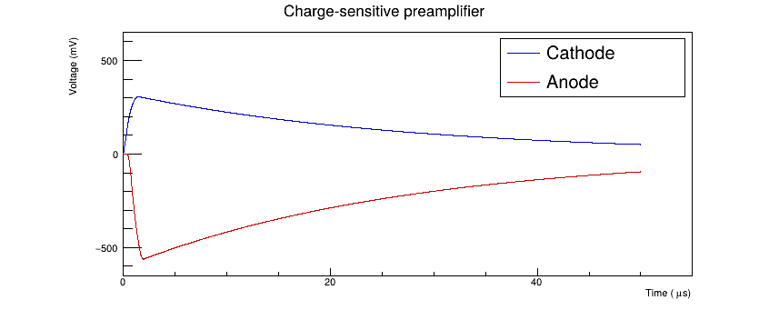
收集电荷需要时间，而前放在此期间已经衰减，所以峰高小于瞬时输入同样电荷时的幅度，这就是 ballistic deficit。改变径迹角度会改变电荷到达的时间分布，即使 $Q_a$ 不变，前放峰高也可能改变。后面的实验分析会比较峰高与经过 pole-zero correction 的电荷估计。
4. 角度依赖与阴极—阳极关联¶
当 $\theta=90^\circ$ 时，径迹与阴极平行，各段电子几乎同时到栅，阴极与阳极电流都接近矩形；当 $\theta=0^\circ$ 时，电子到栅时刻沿径迹展开，电流边缘反映了能损分布。两者可以通过修改上方 theta 比较。
令电离能量的重心为 $\bar s=\sum_j s_j\Delta E_j/E_0$，则
$$Q_c(E_0,\theta)=E_0\left(1-\frac{\bar s}{D}\cos\theta\right) =E_0-[E_0-Q_c(E_0,0)]\cos\theta.$$
这不是只由几何长度决定的关系：Bragg peak 使电离重心偏向径迹末端。知道 $E_0=Q_a$ 并由该能量的径迹求得 $\bar s$ 后，才可用 $Q_c/Q_a$ 估计角度。
angle = np.arange(0, 91, 5, dtype=float)
centroid = np.sum(s*de)/E0
charge_c = E0*(1-centroid/D*np.cos(np.deg2rad(angle)))
charge_a = np.full(len(angle), E0)
gc = ROOT.TGraph(len(angle), angle, charge_c)
ga = ROOT.TGraph(len(angle), angle, charge_a)
c.Clear()
gc.SetTitle("Ideal charge vs angle;#theta (degree);Charge (MeV-equivalent)")
gc.SetLineColor(ROOT.kBlue+1)
ga.SetLineColor(ROOT.kRed+1)
gc.Draw("ALP")
gc.SetMaximum(6.2)
ga.Draw("L SAME")
legend.Draw()
c.Draw()
print(f"Ionization centroid = {centroid:.2f} mm")double centroid=0;
for (int j=0; j<(int)s.size(); ++j) centroid+=s[j]*de[j]/E0;
auto gc=new TGraph(); auto ga=new TGraph();
for (int j=0; j<19; ++j) {
double angle=5.0*j;
gc->SetPoint(j,angle,E0*(1-centroid/D*std::cos(angle*TMath::DegToRad())));
ga->SetPoint(j,angle,E0);
}
c->Clear();
gc->SetTitle("Ideal charge vs angle;#theta (degree);Charge (MeV-equivalent)");
gc->SetLineColor(kBlue+1); ga->SetLineColor(kRed+1);
gc->Draw("ALP"); gc->SetMaximum(6.2); ga->Draw("L SAME");
legend->Draw(); c->Draw();
std::cout << "Ionization centroid = " << centroid << " mm\n";Ionization centroid = 27.28 mm
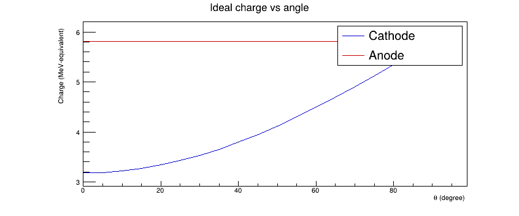
比较两种极限方向的电压波形¶
对 $90^\circ$ 径迹，全部电子在 $D/v_{\rm cg}$ 到栅，可以直接用矩形电流算出前放响应。下图与前面 $0^\circ$ 的结果使用相同增益，保留幅度差异；为了比较形状，阳极也暂画成正极性。
tg90 = D/vc
ic90 = E0*vc/D * np.clip((tg90-(te-dt))/dt, 0, 1)
ia90 = E0*va/d * np.maximum(0, np.minimum(te,tg90+d/va)-np.maximum(te-dt,tg90))/dt
uc90, ua90 = np.zeros(n), np.zeros(n)
sc, sa = 0.0, 0.0
for k in range(n):
sc = a*sc + tau*(1-a)*ic90[k]
sa = a*sa + tau*(1-a)*ia90[k]
uc90[k], ua90[k] = sc, sa
c.Clear()
c.Divide(2,1)
angle_graphs, angle_legends = [], []
for panel, y0, y90, label in [(1,uc,uc90,"Cathode"),(2,ua,ua90,"Anode")]:
c.cd(panel)
g0, g90 = ROOT.TGraph(n,te,y0), ROOT.TGraph(n,te,y90)
g0.SetTitle(label+";Time (#mus);Response (MeV-equivalent)")
g0.SetLineColor(ROOT.kBlue+1)
g90.SetLineColor(ROOT.kRed+1)
g0.Draw("AL")
g0.GetXaxis().SetRangeUser(0,3)
g0.SetMaximum(6.2)
g90.Draw("L SAME")
lg=ROOT.TLegend(.6,.7,.88,.88)
lg.AddEntry(g0,"0 degree","l")
lg.AddEntry(g90,"90 degree","l")
lg.Draw()
angle_graphs.extend([g0,g90])
angle_legends.append(lg)
c.Draw()
np.savetxt("gic_templates.txt", np.column_stack([te,uc,ua,uc90,ua90]))double tg90=D/vc, uc90[n], ua90[n], sc=0, sa=0;
for (int k=0; k<n; ++k) {
double left=te[k]-dt;
double ci90=E0*vc/D*std::max(0.0,std::min(1.0,(tg90-left)/dt));
double ai90=E0*va/d*std::max(0.0,std::min(te[k],tg90+d/va)-std::max(left,tg90))/dt;
sc=a*sc+tau*(1-a)*ci90; sa=a*sa+tau*(1-a)*ai90;
uc90[k]=sc; ua90[k]=sa;
}
c->Clear(); c->Divide(2,1);
double* zero[2]={uc,ua}; double* ninety[2]={uc90,ua90};
const char* labels[2]={"Cathode","Anode"};
for (int j=0; j<2; ++j) {
c->cd(j+1);
auto g0=new TGraph(n,te,zero[j]); auto g90=new TGraph(n,te,ninety[j]);
g0->SetTitle(Form("%s;Time (#mus);Response (MeV-equivalent)",labels[j]));
g0->SetLineColor(kBlue+1); g90->SetLineColor(kRed+1);
g0->Draw("AL"); g0->GetXaxis()->SetRangeUser(0,3); g0->SetMaximum(6.2);
g90->Draw("L SAME");
auto lg=new TLegend(.6,.7,.88,.88);
lg->AddEntry(g0,"0 degree","l"); lg->AddEntry(g90,"90 degree","l"); lg->Draw();
}
c->Draw();
std::ofstream templates("gic_templates.txt");
templates << std::setprecision(17);
for (int k=0; k<n; ++k)
templates << te[k] << " " << uc[k] << " " << ua[k] << " " << uc90[k] << " " << ua90[k] << "\n";
templates.close();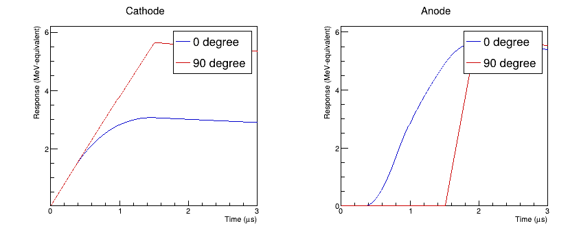
保存波形¶
将当前计算结果保存为一条 TTree 记录，后续可对不同能量、角度逐事件 Fill()。theta 的单位是 degree，ic/ia 为 MeV/μs，uc/ua 为正值的能量等效前放响应；对应时间点由 dt 和数组索引确定。
from array import array
out = ROOT.TFile("gic_example.root", "RECREATE")
wave = ROOT.TTree("wave", "One ideal GIC pulse")
e_buf, th_buf, dt_buf = array('d',[E0]), array('d',[theta]), array('d',[dt])
wave.Branch("e", e_buf, "e/D")
wave.Branch("theta", th_buf, "theta/D")
wave.Branch("dt", dt_buf, "dt/D")
wave.Branch("ic", ic, "ic[5000]/D")
wave.Branch("ia", ia, "ia[5000]/D")
wave.Branch("uc", uc, "uc[5000]/D")
wave.Branch("ua", ua, "ua[5000]/D")
wave.Fill()
wave.Write()
out.Close()
print("Saved gic_example.root: wave, 1 event, 5000 samples/channel")TFile out("gic_example.root","RECREATE");
TTree wave("wave","One ideal GIC pulse");
wave.Branch("e",&E0,"e/D");
wave.Branch("theta",&theta,"theta/D");
wave.Branch("dt",&dt,"dt/D");
wave.Branch("ic",ic,"ic[5000]/D"); wave.Branch("ia",ia,"ia[5000]/D");
wave.Branch("uc",uc,"uc[5000]/D"); wave.Branch("ua",ua,"ua[5000]/D");
wave.Fill(); wave.Write(); out.Close();
std::cout << "Saved gic_example.root: wave, 1 event, 5000 samples/channel\n";Saved gic_example.root: wave, 1 event, 5000 samples/channel
不同能量的阴极—阳极关联¶
将同一计算用于 1、2、3、4、4.775、5.155、5.499、5.805、6 MeV，角度从 $0^\circ$ 到 $90^\circ$、每隔 $5^\circ$ 取一点，共 171 条记录。计算程序逐条保存电流、电荷与前放波形，并检查 $Q_a=E_0$ 和上面的 $Q_c$ 公式。
这是能量—角度网格，不是对源的发射概率抽样。左图画积分电荷，右图画前放峰高；每一点对应一组确定的能量和角度。只有 171 个确定性点，直接用散点图显示，不用细密的 TH2 制造条带宽度。
ROOT.gROOT.LoadMacro("generate_grid.C")
ROOT.generate_grid()
grid_file = ROOT.TFile.Open("gic_grid.root")
grid = grid_file.Get("wave")
print(f"Energy-angle grid: {grid.GetEntries()} records; 0 to 90 degree")
c.Clear()
c.Divide(2,1)
c.cd(1)
hq = ROOT.TH2D("hq", "Integrated charge;Qc (MeV-equivalent);Qa (MeV-equivalent)", 65,0,6.5,65,0,6.5)
hq.Draw("AXIS")
grid.SetMarkerStyle(20)
grid.SetMarkerSize(.45)
grid.Draw("qa:qc", "", "P SAME")
grid.SetMarkerColor(ROOT.kBlue+1)
grid.Draw("qa:qc", "theta==0", "P SAME")
grid.SetMarkerColor(ROOT.kRed+1)
grid.Draw("qa:qc", "theta==90", "P SAME")
grid.SetMarkerColor(ROOT.kBlack)
c.cd(2)
hp = ROOT.TH2D("hp", "Preamplifier peak;Cathode (MeV-equivalent);Anode (MeV-equivalent)", 65,0,6.5,65,0,6.5)
hp.Draw("AXIS")
grid.Draw("pa:pc", "", "P SAME")
grid.SetMarkerColor(ROOT.kBlue+1)
grid.Draw("pa:pc", "theta==0", "P SAME")
grid.SetMarkerColor(ROOT.kRed+1)
grid.Draw("pa:pc", "theta==90", "P SAME")
grid.SetMarkerColor(ROOT.kBlack)
c.Draw()gROOT->ProcessLine(".L generate_grid.C");
gROOT->ProcessLine("generate_grid();");
auto grid_file=TFile::Open("gic_grid.root");
auto grid=grid_file->Get<TTree>("wave");
std::cout << "Energy-angle grid: " << grid->GetEntries() << " records; 0 to 90 degree\n";
c->Clear(); c->Divide(2,1); c->cd(1);
auto hq=new TH2D("hq","Integrated charge;Qc (MeV-equivalent);Qa (MeV-equivalent)",65,0,6.5,65,0,6.5);
hq->Draw("AXIS");
grid->SetMarkerStyle(20); grid->SetMarkerSize(.45);
grid->Draw("qa:qc","","P SAME");
grid->SetMarkerColor(kBlue+1); grid->Draw("qa:qc","theta==0","P SAME");
grid->SetMarkerColor(kRed+1); grid->Draw("qa:qc","theta==90","P SAME");
grid->SetMarkerColor(kBlack);
c->cd(2);
auto hp=new TH2D("hp","Preamplifier peak;Cathode (MeV-equivalent);Anode (MeV-equivalent)",65,0,6.5,65,0,6.5);
hp->Draw("AXIS"); grid->Draw("pa:pc","","P SAME");
grid->SetMarkerColor(kBlue+1); grid->Draw("pa:pc","theta==0","P SAME");
grid->SetMarkerColor(kRed+1); grid->Draw("pa:pc","theta==90","P SAME");
grid->SetMarkerColor(kBlack); c->Draw();Energy-angle grid: 171 records; 0 to 90 degree
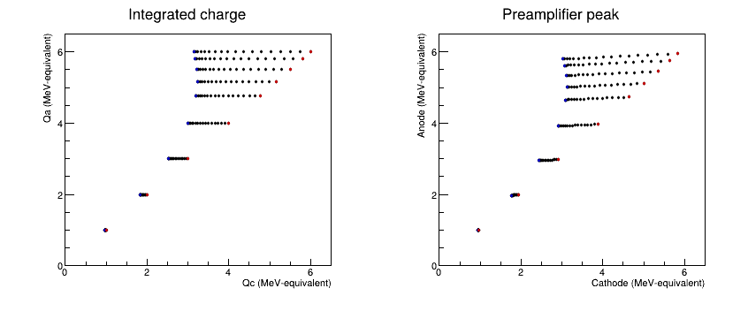
每组左端的蓝点为 $0^\circ$，右端的红点为 $90^\circ$。同一能量下，阴极电荷随角度变化，阳极电荷不变；右图中的阳极峰高则受电荷收集时间与前放衰减影响。电荷关联和峰高关联不能当作同一个量。
5. 波形累积图¶
把各条波形的采样点填入“时间—幅度”TH2，得到类似示波器 persistence 的累积图。颜色表示落在同一 bin 中的采样点数，不是对电流随时间积分。各条径迹共用电离开始的时间零点。
下面每个时间 bin 为 10 ns，与计算步长一致；电流幅度 bin 为 0.1 MeV/μs。电流在约 2 μs 内结束，横轴只显示 0–2.5 μs；颜色用 log scale 同时显示稀疏和重叠部分。
ROOT.gStyle.SetPalette(ROOT.kViridis)
c.Clear()
c.Divide(2,1)
current_maps = []
for panel, branch, label in [(1,"ic","Cathode"),(2,"ia","Anode")]:
c.cd(panel)
ROOT.gPad.SetRightMargin(.16)
ROOT.gPad.SetLogz()
hist = ROOT.TH2D("map_"+branch, label+" current;Time (#mus);MeV/#mus", 250,0,2.5,140,0,14)
hist.SetMinimum(1)
grid.Draw(branch+":(Iteration$+0.5)*dt>>"+hist.GetName(), "Iteration$<250", "COLZ")
current_maps.append(hist)
c.Draw()gStyle->SetPalette(kViridis);
c->Clear(); c->Divide(2,1);
const char* currentNames[2]={"ic","ia"};
const char* channelNames[2]={"Cathode","Anode"};
for (int j=0; j<2; ++j) {
c->cd(j+1); gPad->SetRightMargin(.16); gPad->SetLogz();
auto hist=new TH2D(Form("map_%s",currentNames[j]),Form("%s current;Time (#mus);MeV/#mus",channelNames[j]),250,0,2.5,140,0,14);
hist->SetMinimum(1);
grid->Draw(Form("%s:(Iteration$+0.5)*dt>>%s",currentNames[j],hist->GetName()),"Iteration$<250","COLZ");
}
c->Draw();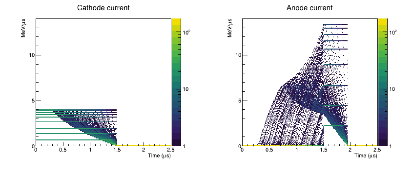
累计电荷和前放响应在每段时间末端计算，因此横轴 bin 中心放在 0.01、0.02、… μs。下图上排是累计电荷，下排是前放响应。上排末端保留已收集的电荷；下排峰后随前放时间常数衰减。两者的纵轴 bin 均为 0.02 MeV-equivalent。
c.Clear()
c.SetCanvasSize(850,660)
c.Divide(2,2)
response_maps = []
for panel,branch,label,end in [(1,"cq","Cathode charge",2.5),(2,"aq","Anode charge",2.5),
(3,"uc","Cathode preamp",50),(4,"ua","Anode preamp",50)]:
c.cd(panel)
ROOT.gPad.SetRightMargin(.16)
ROOT.gPad.SetLogz()
bins = int(round(end/dt))
hist = ROOT.TH2D("map_"+branch,label+";Time (#mus);MeV-equivalent",bins,.005,end+.005,310,0,6.2)
hist.SetMinimum(1)
grid.Draw(branch+":(Iteration$+1)*dt>>"+hist.GetName(), f"Iteration$<{bins}", "COLZ")
response_maps.append(hist)
c.Draw()c->Clear(); c->SetCanvasSize(850,660); c->Divide(2,2);
const char* responseNames[4]={"cq","aq","uc","ua"};
const char* responseLabels[4]={"Cathode charge","Anode charge","Cathode preamp","Anode preamp"};
for (int j=0; j<4; ++j) {
c->cd(j+1); gPad->SetRightMargin(.16); gPad->SetLogz();
int bins=(j<2 ? 250 : 5000);
auto hist=new TH2D(Form("map_%s",responseNames[j]),Form("%s;Time (#mus);MeV-equivalent",responseLabels[j]),bins,.005,bins*dt+.005,310,0,6.2);
hist->SetMinimum(1);
grid->Draw(Form("%s:(Iteration$+1)*dt>>%s",responseNames[j],hist->GetName()),Form("Iteration$<%d",bins),"COLZ");
}
c->Draw();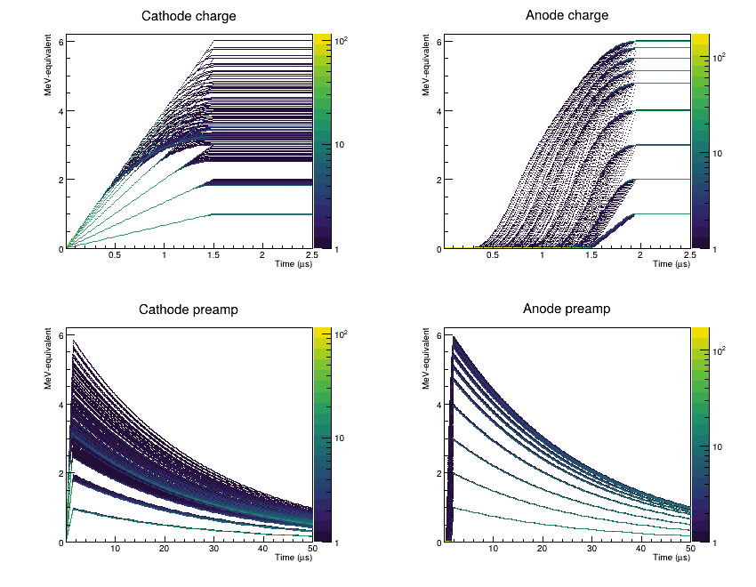
累积图中的离散曲线来自所选能量和角度网格。这里没有噪声或径迹涨落，不能用这些曲线的疏密推断源的产额或探测器分辨率。
6. 实际信号还受什么影响¶
理想模型解释了主要形状，但实际 GIC 的本底与脉冲差异不能归结为单一效应。
- 电子附着：杂质使漂移电子减少，可用 $N_e(t)=N_e(0)e^{-t/\tau_{\rm att}}$ 描述简单情况。长距离漂移损失更多，阳极电荷也会出现角度依赖。
- 有限栅极屏蔽：阳极在电子过栅前可能已有感应分量。栅极非屏蔽与电子穿过栅丝的透明度不是同一件事，不能只用一个几何开孔比例修正全部信号。
- 输运与电子学：扩散、射程涨落、前放带宽和数字滤波会改变边缘与上升时间。前放峰高的角度依赖既可能来自附着，也可能来自 ballistic deficit；应结合电荷和波形判断。
下一节：实验波形分析与模拟比较。
参考文献¶
- J. Liu et al., “The impacts of the ballistic deficit and electron attachment on the pulse shapes of the Frisch-grid ionization chamber,” Nucl. Instrum. Methods A 1014, 165751 (2021). DOI.
- A. Göök et al., “Application of the Shockley–Ramo theorem on the grid inefficiency of Frisch grid ionization chambers,” Nucl. Instrum. Methods A 664, 289–293 (2012). DOI.
- J. F. Ziegler, M. D. Ziegler and J. P. Biersack, “SRIM – The stopping and range of ions in matter (2010),” Nucl. Instrum. Methods B 268, 1818–1823 (2010). DOI.